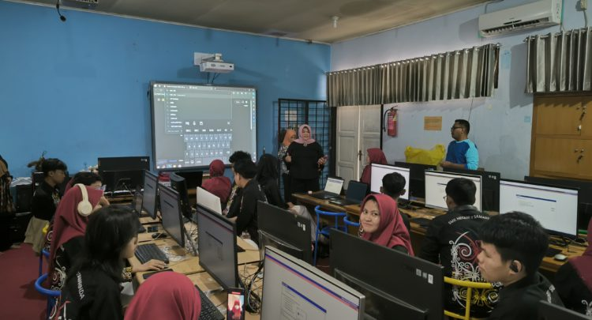
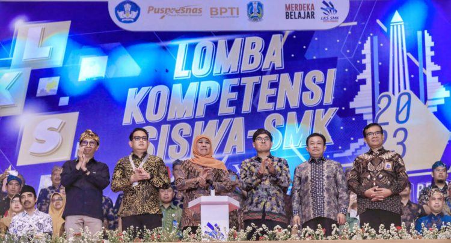

Pelaksanaan Sertifikasi TOEIC 2024 Implementasi Sertifikasi Internasional Kemampuan Bahasa Inggris TOEIC 2024 di SMK Negeri 7 Samarinda
Diupload pada 27-08-2024 oleh Admin
Dalam rangka meningkatkan daya saing global di tengah perkembangan era teknologi ini, Direktorat SMK bekerjasama dengan PT International Test Center kembali menyelenggarakan kegiatan fasilitasi peningkatan kompetensi dan sertifikasi Bahasa Asing siswa SMK dengan Test of English for International Communication (TOEIC). Program in bertujuan untuk meningkatkan kemampuan bahasa Inggris siswa Sekolah Menengah Kejuruan (SMK), mempersiapkan mereka untuk dapat menghadapi tantangan global, dan memberikan sertifikasi yang diakui secara internasional melalui ujian TOEIC... Baca Selengkapnya
Partisipasi Berharga SMK Negeri 7 Samarinda dalam LKS Nasional 2023
Diupload pada 25-08-2024 oleh Admin
Tanggal 23-28 Oktober 2023 adalah momen penting bagi para siswa dari berbagai sekolah menengah kejuruan di seluruh Indonesia. Kompetisi tingkat nasional yang dikenal dengan nama LKS (Lomba Kompetensi Siswa) Nasional telah berlangsung di Surabaya, Jawa Timur, dan menjadi ajang unggulan dalam menunjukkan kemampuan dan potensi siswa dalam berbagai bidang keahlian. Salah satu sekolah yang berpartisipasi aktif dalam ajang bergengsi ini adalah SMK Negeri 7 Samarinda.... Baca Selengkapnya